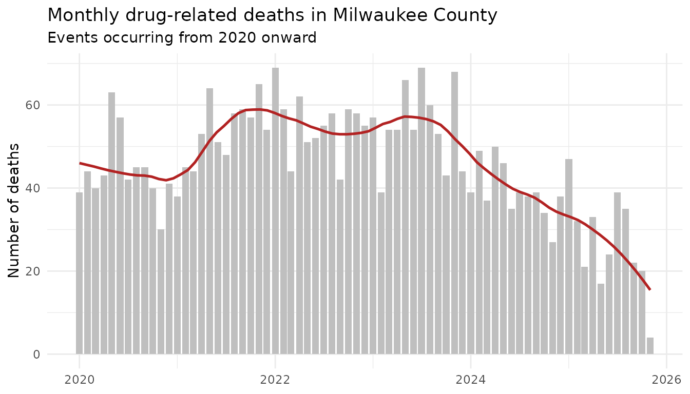
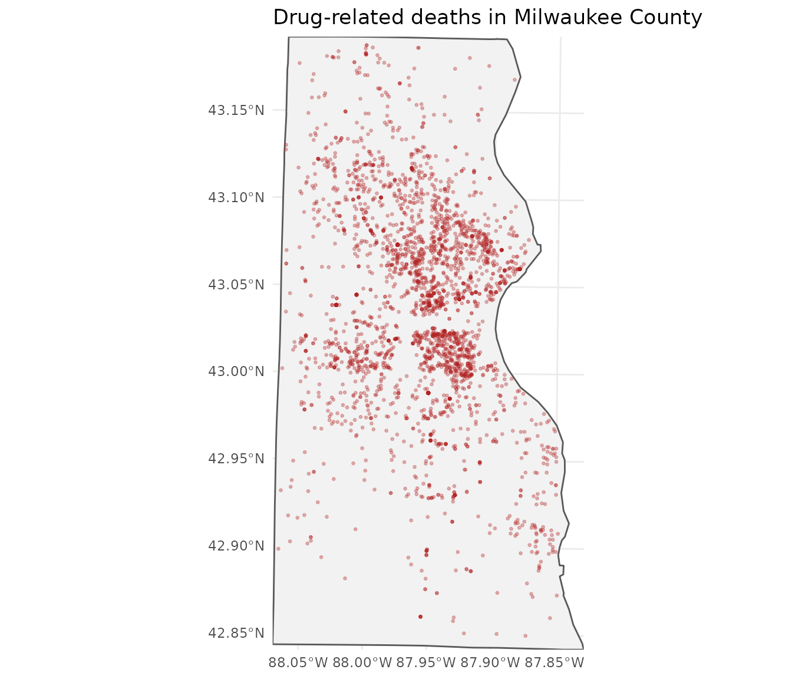
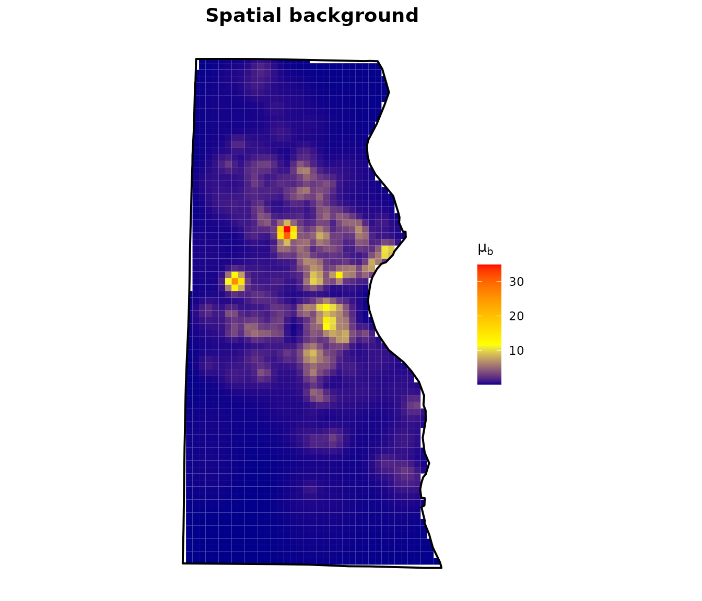
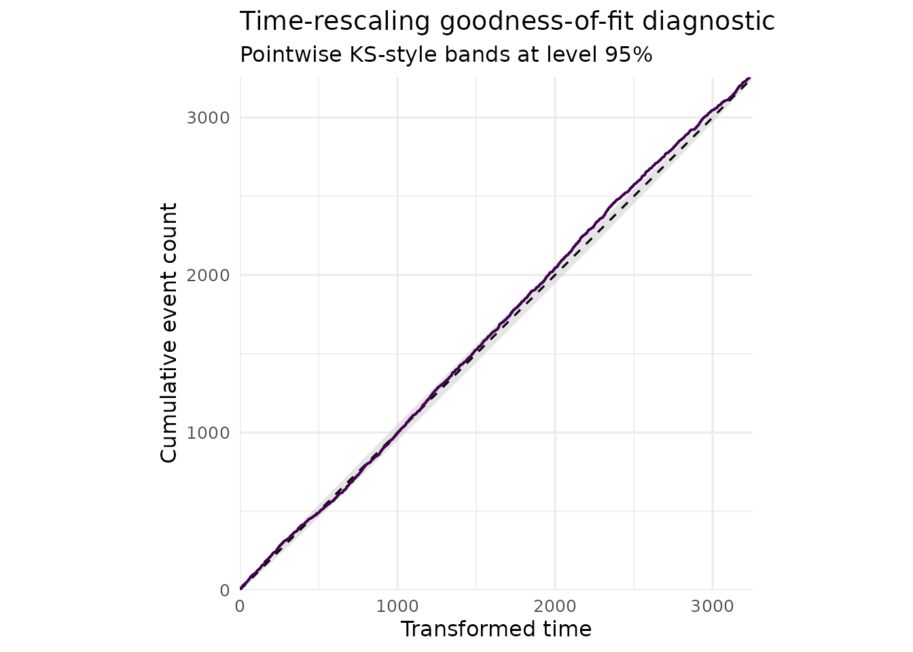
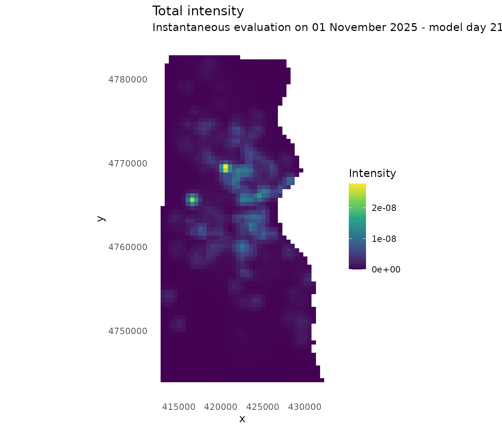
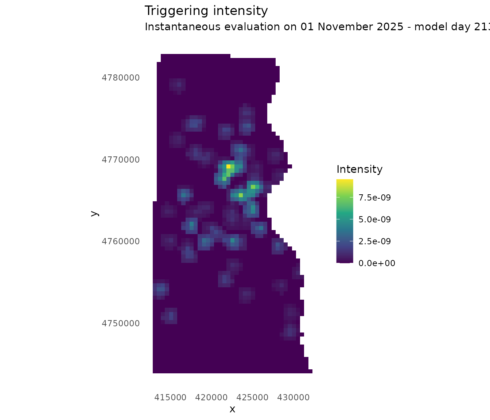
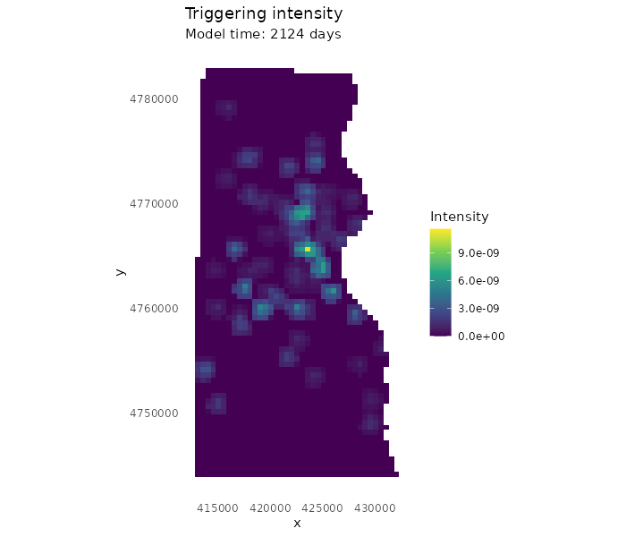
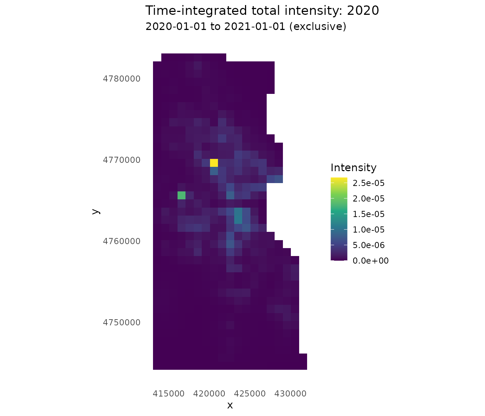
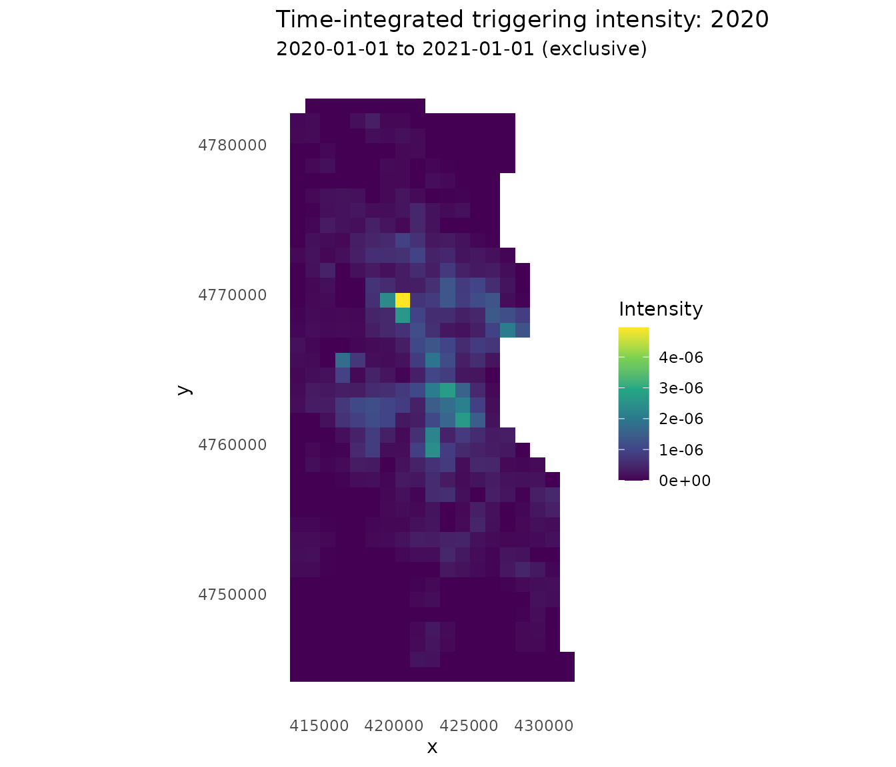

Modelling drug-related deaths in Milwaukee County
Source:vignettes/milwaukee-drug-deaths.Rmd
milwaukee-drug-deaths.RmdOverview
This vignette illustrates an analysis of drug-related deaths in
Milwaukee County, Wisconsin, using spHawkes.
The packaged milwaukee dataset contains geocoded events
classified as drug-related deaths with recorded dates from 2020 onward.
The accompanying milwaukee_county object is the polygonal
observation window. Both are stored in NAD83 / UTM zone 16N
(EPSG:26916), so spatial coordinates and distance-based tuning
parameters are expressed in metres.
The dataset is included as a reproducible worked example. It is not
an authoritative administrative release. See ?milwaukee for
data provenance, construction details, and limitations.
The workflow covers exploratory plots, model fitting, diagnostics, instantaneous intensity maps, a daily animation, and an annual time-integrated intensity map. Code is displayed throughout so that the analysis can be reproduced.
library(spHawkes)
library(dplyr)
#>
#> Attaching package: 'dplyr'
#> The following objects are masked from 'package:stats':
#>
#> filter, lag
#> The following objects are masked from 'package:base':
#>
#> intersect, setdiff, setequal, union
library(sf)
#> Linking to GEOS 3.14.1, GDAL 3.12.2, PROJ 9.7.1; sf_use_s2() is TRUE
library(ggplot2)Data
milwaukee
#> Simple feature collection with 3255 features and 7 fields
#> Geometry type: POINT
#> Dimension: XY
#> Bounding box: xmin: 412937.2 ymin: 4744508 xmax: 430757.1 ymax: 4782155
#> Projected CRS: NAD83 / UTM zone 16N
#> # A tibble: 3,255 × 8
#> event_id DeathDate death_year death_month death_week death_day_of_week
#> <int> <date> <dbl> <date> <date> <ord>
#> 1 1 2023-08-13 2023 2023-08-01 2023-08-07 Sun
#> 2 2 2023-08-03 2023 2023-08-01 2023-07-31 Thu
#> 3 3 2022-02-04 2022 2022-02-01 2022-01-31 Fri
#> 4 4 2021-10-27 2021 2021-10-01 2021-10-25 Wed
#> 5 5 2024-03-13 2024 2024-03-01 2024-03-11 Wed
#> 6 6 2024-01-09 2024 2024-01-01 2024-01-08 Tue
#> 7 7 2024-02-22 2024 2024-02-01 2024-02-19 Thu
#> 8 8 2024-08-31 2024 2024-08-01 2024-08-26 Sat
#> 9 9 2022-10-06 2022 2022-10-01 2022-10-03 Thu
#> 10 10 2024-05-27 2024 2024-05-01 2024-05-27 Mon
#> # ℹ 3,245 more rows
#> # ℹ 2 more variables: death_weekend <lgl>, geometry <POINT [m]>
milwaukee_county
#> Simple feature collection with 1 feature and 1 field
#> Geometry type: MULTIPOLYGON
#> Dimension: XY
#> Bounding box: xmin: 412570.6 ymin: 4743626 xmax: 432409.2 ymax: 4782699
#> Projected CRS: NAD83 / UTM zone 16N
#> region_name geometry
#> 1 Milwaukee County, WI MULTIPOLYGON (((412632 4746...There are 3255 events in the dataset, spanning from 01 January 2020 to 07 November 2025.
The event geometry is POINT and the observation window
has MULTIPOLYGON geometry. Both use EPSG:26916.
Exploratory patterns
Monthly counts
The following series gives a first descriptive view of temporal variation. The smooth is descriptive only; it is not part of the fitted point-process model.
monthly_counts <- milwaukee %>%
st_drop_geometry() %>%
count(death_month, name = "n_events")
ggplot(
monthly_counts,
aes(x = death_month, y = n_events)
) +
geom_col(
fill = "grey75",
width = 25
) +
geom_smooth(
method = "loess",
formula = y ~ x,
se = FALSE,
colour = "firebrick",
linewidth = 0.9,
span = 0.35
) +
theme_minimal() +
labs(
title = "Monthly drug-related deaths in Milwaukee County",
subtitle = "Events occurring from 2020 onward",
x = NULL,
y = "Number of deaths"
)
Event locations
ggplot() +
geom_sf(
data = milwaukee_county,
fill = "grey95",
colour = "grey35",
linewidth = 0.5
) +
geom_sf(
data = milwaukee,
colour = "firebrick",
alpha = 0.30,
size = 0.55
) +
coord_sf(expand = FALSE) +
theme_minimal() +
labs(
title = "Drug-related deaths in Milwaukee County",
x = NULL,
y = NULL
)
The visible spatial heterogeneity motivates a model with a flexible background intensity rather than a spatially homogeneous baseline.
Fitting the model
fit_semihawkes() requires an sf object of
point events, a polygonal observation window, and the name of the date
column. Since the data are projected in metres, cell_size,
min_dist, and min_bandwidth below are also
specified in metres.
The settings below prioritise a reasonably quick vignette build. Only one EM iteration is used. The resulting fit illustrates the workflow and should not be interpreted as a demonstrated converged analysis.
For a substantive analysis, inspect convergence and assess stability
under more iterations and alternative tuning parameters. These include
the triggering kernel’s spatial reach, which is left at its default of 1
km here; it should be chosen with care for the process being studied
(see Choosing the triggering reach in
?fit_semihawkes).
cache_dir <- tempfile("spHawkes-milwaukee-")
dir.create(cache_dir)
fit <- fit_semihawkes(
points = milwaukee,
region = milwaukee_county,
date_col = "DeathDate",
cell_size = 500,
cache_dir = cache_dir,
bandwidth_args = list(
k = 5,
min_dist = 150,
min_bandwidth = 300
),
n_iter = 1,
verbose = FALSE
)
summary(fit)
#> Semi-parametric spatio-temporal Hawkes fit
#> ------------------------------------------------------------
#> Events : 3255
#> Study window : 2020-01-01 to 2025-11-08 (2138 days)
#> CRS : EPSG:26916
#>
#> Parameters
#> mu (baseline rate) : 1.67427e-09 per unit area per day
#> A (branching ratio) : 0.3171 expected offspring per event
#> log-likelihood : -64233.9
#>
#> Branching structure (from fitted background probabilities)
#> background : 2451.0 events ( 75.3%)
#> triggered : 804.0 events ( 24.7%)
#>
#> Fitted components (range over their support)
#> trend [ 0.447, 1.146]
#> weekly [ 0.9455, 1.066]
#> monthly [ 0.9491, 1.032]
#> spatial background [ 0.001442, 34.95]
#> trigger (temporal) [ 0.004386, 0.03928]
#> trigger (spatial) [ 0, 6.585e-07]
#>
#> Convergence
#> 1 EM iteration, reached n_iter without converging
#> final change in log-likelihood: 653.262
fit$n_iter
#> [1] 1
fit$stop_reason
#> [1] "max_iter"Interpret the estimated background component jointly with the self-exciting component. Spatial or temporal clustering alone does not establish a triggering mechanism.
Model components
The model separates the estimated intensity into time-varying and spatial background components and a self-exciting contribution. These plots provide a compact view of the fitted background components.
plot(fit, which = "weekly")
plot(fit, which = "monthly")
plot(fit, which = "trend")
plot(fit, which = "background")
Temporal goodness of fit
The temporal diagnostic compares observed event accumulation with the
accumulation implied by the fitted model. Here, dt = 1 uses
a one-day discretisation.
gof_time <- gof_time_transform(
fit,
dt = 1
)
plot(gof_time)
Systematic discrepancies can indicate temporal structure not captured by the fitted model. Agreement is evidence consistent with adequacy, not proof that the proposed mechanism is correct.
Spatial intensity snapshots
The fitted model can be evaluated on a spatial grid at selected
times. This is a separate step from fitting:
background_trigger_grid() uses the estimated components to
calculate background and triggering intensities at grid locations.
The workflow is:
- Fit the model and retain
fit. - Evaluate selected times and retain
grid_result. - Plot or animate the evaluated snapshots.
The example below selects up to 15 consecutive days near the end of
the fitted observation window. Model times are measured in days since
fit$events$start_date.
We use 500 m spacing to keep the evaluation grid relatively small. This grid is constructed separately from the background grid used during fitting.
model_origin <- as.Date(fit$events$start_date)
last_day <- floor(fit$events$TT)
selected_days <- seq.int(
from = max(0, last_day - 14),
to = last_day
)
grid_result <- background_trigger_grid(
fit = fit,
city = milwaukee_county,
cell_size = 500,
days = selected_days,
nprocs = 1
)
snapshot_time <- selected_days[
ceiling(length(selected_days) / 2)
]
snapshot_date <- model_origin + snapshot_timeTotal intensity
The total conditional intensity combines the background and triggering components. This map is an instantaneous evaluation, not intensity integrated over a full day.
plot_intensity_snapshot(
grid = grid_result,
time = snapshot_time,
component = "total"
) +
labs(
subtitle = paste(
"Instantaneous evaluation on",
format(snapshot_date, "%d %B %Y"),
"- model day",
snapshot_time
)
)
Triggering intensity
The triggering map shows the fitted contribution of preceding events at the selected time. It is a model-based conditional contribution, not evidence that one death caused another.
plot_intensity_snapshot(
grid = grid_result,
time = snapshot_time,
component = "triggering"
) +
labs(
subtitle = paste(
"Instantaneous evaluation on",
format(snapshot_date, "%d %B %Y"),
"- model day",
snapshot_time
)
)
These two static maps use separate colour scales. Their colours should not be compared directly as if they represented the same numerical values.
Daily intensity animation
The same evaluated grid can be reused to generate an animation. Each frame shows triggering intensity at one evaluated model time. The colour scale is shared across frames.
The animation requires the optional gifski package, so
the chunk below is skipped when gifski is not installed
rather than failing the build. Install it to see the animation.
dir.create(
"figures",
recursive = TRUE,
showWarnings = FALSE
)
gif_file <- "figures/milwaukee-triggering-intensity.gif"
animate_intensity_snapshots(
grid = grid_result,
component = "triggering",
filename = gif_file,
fps = 3,
width = 700,
height = 600,
overwrite = TRUE
)
stopifnot(
file.exists(gif_file),
file.info(gif_file)$size > 0
)
knitr::include_graphics(gif_file)
Daily snapshots of fitted triggering intensity in Milwaukee County.
The chunk’s code is shown either way. Where gifski is
available the GIF is regenerated and the animation appears above; where
it is not, the code is listed but not run.
Grid values are pointwise intensity evaluations, displayed as tiles centred on the evaluation coordinates. The tiles are not clipped to the county boundary.
Annual time-integrated intensity
An instantaneous map describes intensity at one time. To summarise a complete year while retaining the spatial dimension, integrate the intensity over time:
where is 1 January of the selected year and is 1 January of the following year.
This is an integral, not an annual average. Background and triggering contributions are integrated separately.
Select a complete year
The following code identifies calendar years fully covered by the fitted observation window and selects the first one.
Both boundaries must lie inside the model window. We do not silently replace a full year with a shorter interval.
model_origin <- as.Date(fit$events$start_date)
model_end <- model_origin + floor(fit$events$TT)
candidate_years <- seq.int(
from = as.integer(format(model_origin, "%Y")),
to = as.integer(format(model_end, "%Y"))
)
candidate_starts <- as.Date(
sprintf("%d-01-01", candidate_years)
)
candidate_ends <- as.Date(
sprintf("%d-01-01", candidate_years + 1L)
)
candidate_start_times <- as.numeric(
candidate_starts - model_origin
)
candidate_end_times <- as.numeric(
candidate_ends - model_origin
)
complete_years <- candidate_years[
candidate_start_times >= 0 &
candidate_end_times <= fit$events$TT
]
if (!length(complete_years)) {
stop("The fitted observation window contains no complete calendar year.")
}
annual_year <- complete_years[1L]
# To select another covered year, replace the line above, for example:
# annual_year <- 2021L
if (!(annual_year %in% complete_years)) {
stop("The selected year is not fully covered by the fitted window.")
}
annual_start_date <- as.Date(
sprintf("%d-01-01", annual_year)
)
annual_end_date <- as.Date(
sprintf("%d-01-01", annual_year + 1L)
)
annual_start_time <- as.numeric(
annual_start_date - model_origin
)
annual_end_time <- as.numeric(
annual_end_date - model_origin
)
annual_year
#> [1] 2020
annual_start_date
#> [1] "2020-01-01"
annual_end_date
#> [1] "2021-01-01"The selected year is 2020. Its integration interval runs from 01 January 2020 to 01 January 2021, with the latter date defining the exclusive upper boundary.
Evaluate and integrate
First evaluate instantaneous surfaces throughout the year. Then pass
the resulting grid to integrate_intensity_period().
The daily time step below is an initial numerical approximation, chosen to keep the worked example manageable, as is the coarser 1 km spatial grid: evaluating a whole year of daily surfaces is the most expensive step in this vignette. The endpoint is included because the trapezoidal rule uses evaluations at both boundaries.
integration_step <- 1
annual_times <- sort(unique(c(
seq(
from = annual_start_time,
to = annual_end_time,
by = integration_step
),
annual_end_time
)))
annual_grid <- background_trigger_grid(
fit = fit,
city = milwaukee_county,
cell_size = 1000,
days = annual_times,
nprocs = 1
)
annual_intensity <- integrate_intensity_period(
grid = annual_grid,
start = annual_start_time,
end = annual_end_time
)
annual_intensity$period
#> start end
#> 0 366
annual_intensity$integration$method
#> [1] "trapezoid"Integration uses actual time differences between evaluations. It therefore accommodates the different durations of ordinary and leap years without dividing by the number of days.
Annual total intensity map
The integrated object contains one surface per component. Its single snapshot is identified by the initial model time.
We reuse the plotting function and explicitly change the labels to distinguish the integral from an instantaneous intensity.
plot_intensity_snapshot(
grid = annual_intensity,
time = annual_start_time,
component = "total"
) +
labs(
title = paste(
"Time-integrated total intensity:",
annual_year
),
subtitle = paste(
format(annual_start_date),
"to",
format(annual_end_date),
"(exclusive)"
),
fill = "Integrated intensity"
)
Annual triggering contribution
The same integrated object can be used to inspect the annual triggering contribution without reevaluating the model.
plot_intensity_snapshot(
grid = annual_intensity,
time = annual_start_time,
component = "triggering"
) +
labs(
title = paste(
"Time-integrated triggering intensity:",
annual_year
),
subtitle = paste(
format(annual_start_date),
"to",
format(annual_end_date),
"(exclusive)"
),
fill = "Integrated intensity"
)
Use component = "background" to display the integrated
background contribution. The static maps have separately determined
colour scales.
Interpretation and numerical accuracy
These maps retain spatial variation after integrating over time. They are not event counts per cell: obtaining a cell-level contribution to the compensator would additionally require spatial integration.
The calculation uses the observed history throughout the selected year. It is a retrospective integrated conditional intensity, not a forecast made at the beginning of that year.
The trapezoidal rule integrates the sampled surfaces. It is not an exact event-aware integration procedure, and triggering intensity can change discontinuously at event times. For substantive use, assess stability with a finer temporal evaluation grid rather than assuming that daily evaluations are sufficient.
Evaluations also inherit the temporal and spatial triggering cutoffs
of background_trigger_grid(). Those settings should be
reviewed alongside the time step and spatial resolution.
Reproducibility and limitations
The construction code for the packaged datasets is available in
data-raw/make-milwaukee-data.R in the package source. It
filters the underlying release to drug-related deaths dated from 2020
onward with valid geocodes that intersect the Milwaukee County
boundary.
Nothing in this vignette is cached: the model fit, the evaluated grids, the annual integral and the GIF are all recomputed each time the vignette is built, so they reflect the installed version of the package.
This example demonstrates the workflow of spHawkes; it
should not be treated as a definitive epidemiological or policy
analysis. In particular, geocoding uncertainty, administrative
classification, changes in reporting, and unobserved covariates can
generate spatial and temporal patterns that resemble
self-excitation.
Only one EM iteration is used here. All fitted surfaces, diagnostics, and integrated maps should therefore be interpreted as illustrative outputs rather than results from a demonstrated converged fit.